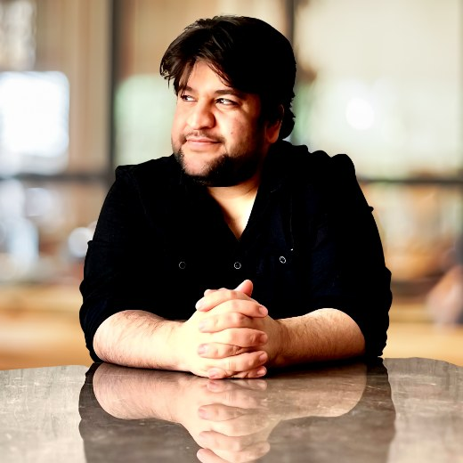

Ürün Mühendisliği
Mobil sistemler, pazar yerleri, rezervasyon akışları, kimlik doğrulama, ödemeler, gerçek zamanlı deneyimler ve üretime teslim.
Teknik Kurucu · Ürün Mühendisi
Muhammed; mobil ürünler, finans teknolojileri, pazar yerleri ve üretim ortamındaki yazılımları kapsayan mühendislik geçmişiyle DevMarathon ve Capilens'in kurucusudur.
01 / Ana ürün
Güncel · Kurucu & Ürün Mühendisi
DevMarathon, yapay zekâ destekli bir geliştirici görev platformudur. Geliştiriciler yapılandırılmış 72 saatlik ürün geliştirme maratonlarını tamamlar; kurumlar ise yalnızca özgeçmiş ve görüşmelere değil, teslim edilen işe dayanan işe alım görevleri düzenleyebilir.

02 / Güncel ürün
Kurucu & Ürün Mühendisi · Mart 2026'dan beri
Capilens, Türkiye'deki saç ekimi seçeneklerini araştıran kişiler için hasta odaklı, yapay zekâ destekli bir karar desteği ürünüdür. Kullanıcıların klinik seçmeden önce bilgiyi düzenlemesine ve daha iyi sorular hazırlamasına yardımcı olur.
Karar desteğidir; tanı veya tıbbi tavsiye değildir. Capilens bir klinik değildir.

03 / Önceki girişim
AyoTech Yazılım Teknolojileri A.Ş. · 2022–2025
Muhammed, kurucu ve lider mobil uygulama geliştiricisi olarak AyoTravel'i rezervasyon, kimlik doğrulama, gerçek zamanlı mesajlaşma, çevrimdışı senkronizasyon, ödeme ve çok dilli ürün akışları içeren bir Flutter pazar yeri olarak geliştirdi.

04 / Deneyim
Kurucu & Ürün Mühendisi
Geliştirici performansı ve hasta odaklı karar desteği etrafında iki yapay zekâ destekli SaaS ürünü geliştiriyor.
Teknik Ürün Danışmanı · Yarı zamanlı
Kitle kaynaklı kargo pazar yerinde ürün yönü, emanet ödeme, kimlik, güven, emniyet ve mimari konularında danışmanlık veriyor.
Kurucu & Lider Mobil Uygulama Geliştiricisi
Şirketi kurdu ve AyoTravel'i üç mobil mağazada yayınladı.
Flutter Geliştirici
Daha sonra Infox'a dönüşen bir finans teknolojisi uygulaması için gerçek zamanlı piyasa verisi, portföy ve işlem akışları geliştirdi.
Flutter Geliştirici
Gizlilik odaklı Android ve iOS yazılımları ile kullanıcıya dönük kişisel veri yönetimi özellikleri geliştirdi.
05 / Mühendislik
Mobil sistemler, pazar yerleri, rezervasyon akışları, kimlik doğrulama, ödemeler, gerçek zamanlı deneyimler ve üretime teslim.
Flutter, Dart, MVVM, Atomic Design, Clean Architecture, modülerleştirme, performans, test ve mağaza yayınları.
Firebase, Supabase, PostgreSQL, SQL, REST API'ler, kimlik doğrulama ve temel FastAPI bilgisi.
Ürün kararlarından yayınlanmış yazılıma uzanan süreçlerde Cursor, Codex, Claude API ve yapay zekâ destekli ürün akışları.

06 / Kurucu
Muhammed; kariyeri mobil mühendislikle başlayan, ardından pazar yerleri, finans teknolojisi sistemleri, ürün mimarisi ve yapay zekâ destekli yazılım ürünlerine uzanan bir bilgisayar mühendisi ve teknik kurucudur.
En güçlü profesyonel temeli Flutter ve mobil mühendisliktir; güncel çalışmaları bu deneyimi yapay zekâ destekli SaaS ürün geliştirmeye taşır.
Kastamonu Üniversitesi
Bilgisayar Mühendisliği
07 / Profiller